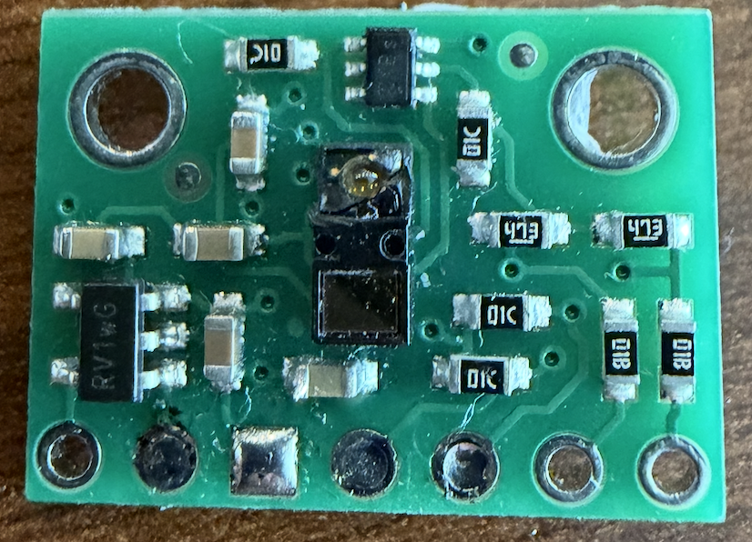
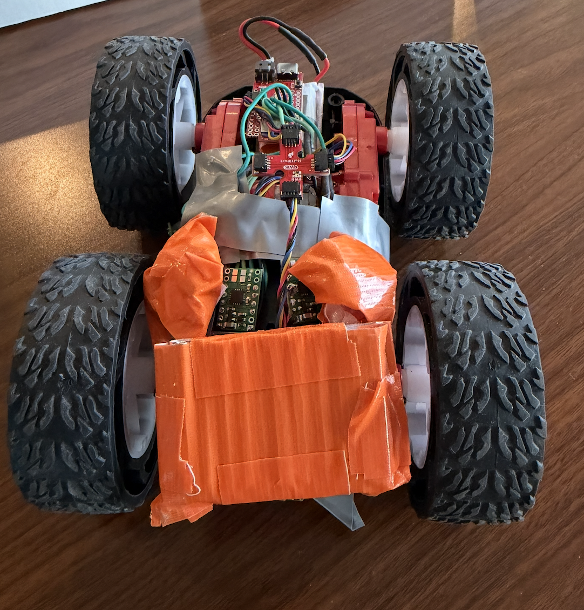
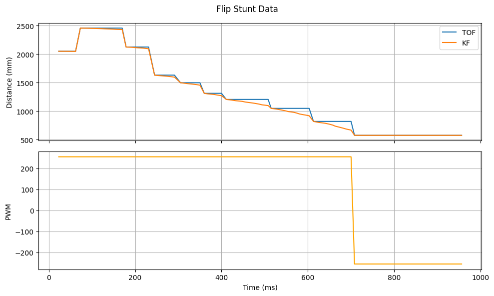

Lab 8: Stunts!
Goal: Do a fast stunt — drive toward a wall, then flip and drive back before hitting it.
Task: Flip
For this lab, I decided to do the flipping task. The robot starts a distance from the wall, drives toward the sticky mat, flips when it reaches the sticky mat, then drives back toward the starting point.
Global Variables
On the code side, I added two commands for starting the flip stunt and sending data. First I added the following global variables:
const int FLIP_DATA_LEN = 1000;
int flip_run_flag = 0;
int flip_data_count = 0;
float flip_start_time = 0;
float flip_last_time = 0;
float flip_last_tof = 0;
int do_flip = 0;
float flip_time_arr[FLIP_DATA_LEN];
float flip_tof_arr[FLIP_DATA_LEN];
float flip_pwm_arr[FLIP_DATA_LEN];
float flip_kf_arr[FLIP_DATA_LEN];START_FLIP_STUNT
Here are the two commands for running the flip stunt and collecting data.
case START_FLIP_STUNT:
flip_data_count = 0;
flip_start_time = millis();
flip_last_time = flip_start_time;
tofSensor1.startRanging();
while (!tofSensor1.checkForDataReady()) { delay(1); }
flip_last_tof = tofSensor1.getDistance();
kf_mu = {flip_last_tof, 0.0};
kf_sigma = {500, 0, 0, 500};
flip_run_flag = 1;
do_flip = 0;
break;SEND_FLIP_DATA
case SEND_FLIP_DATA:
Serial.print("Sending "); Serial.print(flip_data_count); Serial.println(" flip samples");
for (int i = 0; i < flip_data_count; i++) {
tx_estring_value.clear();
tx_estring_value.append(flip_time_arr[i]); tx_estring_value.append(",");
tx_estring_value.append(flip_tof_arr[i]); tx_estring_value.append(",");
tx_estring_value.append(flip_pwm_arr[i]); tx_estring_value.append(",");
tx_estring_value.append(flip_kf_arr[i]);
tx_characteristic_string.writeValue(tx_estring_value.c_str());
delay(10);
}
break;runFlipStunt()
The main flip stunt logic is in the following function. This function uses Kalman filtering since data from the TOF sensor is not fast enough, and the robot is driving at max speed toward the wall. I also defined four tuning variables.
#define FLIP_TRIGGER_MM 740.0 // kalman filter distance to initiate flip
#define FLIP_FORWARD_PWM 255 // speed to drive forward (tuned for initial testing)
#define FLIP_REVERSE_PWM 255
#define FLIP_REVERSE_MS 1000 // time robot is reversing (so it doesn't run away!)The robot will drive toward the wall at max speed (255 PWM). Once the Kalman Filter value for distance drops below FLIP_TRIGGER_MM, the robot immediately drives in reverse at max speed, causing it to flip and drive back.
void runFlipStunt() {
if (flip_data_count >= FLIP_DATA_LEN) {
flip_run_flag = 0;
stop();
return;
}
float current_time = millis();
if (!do_flip) {
forward(FLIP_FORWARD_PWM);
if (tofSensor1.checkForDataReady()) {
flip_last_tof = tofSensor1.getDistance();
tofSensor1.clearInterrupt();
tofSensor1.stopRanging();
tofSensor1.startRanging();
// kalman step with new TOF
} else {
// kalman step with no new TOF
}
float kf_distance = kf_mu(0, 0);
if (flip_last_tof > 0 && kf_distance > 0 && kf_distance < FLIP_TRIGGER_MM) {
do_flip = 1;
flip_last_time = millis();
}
} else {
if (millis() - flip_last_time > FLIP_REVERSE_MS) {
// stop car
}
backward(FLIP_REVERSE_PWM);
}
// data collection ...
flip_data_count++;
}Testing & Challenges
With all the code above, I began testing, which was a very long, difficult process. I ran into several challenges along the way, including a broken ToF sensor when the robot crashed into a chair.

I also had to re-solder motor connections since they became loose and were weak, causing the wheels to sometimes not turn. One of the biggest problems was the difference between the left and right wheels. I realized that when reversing, the right side of the car was switching directions slower than the left, causing the car to turn in the air and not face the right direction on the way back after the flip. Here is an example of that:
Also, in order to flip, the car needs to be fully on the sticky mat AND have weight at the front to make it complete the flip. Here is the setup I made by taping metal screws to the front. I had to make sure it didn't affect the wheels either.

Results
After several hours of tuning the distance to flip at and fixing any issues I ran into, I was able to achieve good results. Here are three separate runs of the Flip stunt.
Run 1
Run 2
Run 3
Here is a plot of the TOF, Kalman Filter, and PWM data for the first run. As you can see, the Kalman Filter does a good job of estimating the TOF values, which allows for faster detection of the wall and better stunt performance!

Here's a little blooper where the robot decided not to do the flip halfway through, and ran away instead.
Reflection
This lab was by far the most challenging one for me, due to all of the issues I faced that required further time to fix, like the broken ToF, drifting due to difference in wheels, and re-soldering wires. It took many tries to even get the car to flip, and way more to get it to drive back straight across the starting point. The Kalman Filter proved to be very important and helpful for tuning, since I don't need to rely too heavily on the ToF, so the previous lab was crucial to get right. There were different scale factors to account for drift for both the forward and reverse driving, which also took a lot of time to tune.
Collaboration
For this lab, I referenced Lucca's page for a general sense of the direction I wanted to take with getting the stunt. I referenced his strategy for the Kalman Filter implementation, and waited to get the first TOF before starting the stunt. I also used Claude for help with debugging specific parts of the code and keeping track of my global variables, as well as plotting data.